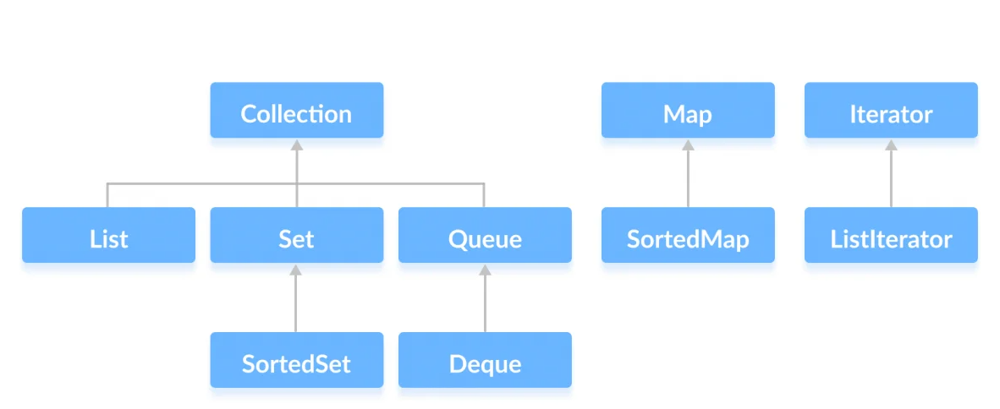

Java Collection Framework
Bevezetés
A gyűjtemények (vagy más néven tárolók, konténerek, kollekciók) olyan típuskonstrukciós eszközök, melynek célja egy vagy több típusba tartozó objektumok memóriában történő összefoglaló jellegű tárolása, manipulálása és lekérdezése.
Ebben a szekcióban megismerkedünk a java gyűjtemény keretrendszerrel (Java Collections Framework, JCF), ami egy egységes architektúra a gyűjtemények használatára és manipulálására. A gyűjtemény keretrendszer tartalmazza:
- interfészek: absztrakt adattípusok reprezentációja. Az interfészek lehetővé teszik a gyűjtemények szolgáltatásainak ( publikus interfészének) megvalósítás-független ábrázolását.
- implementációk: a gyűjtemény interfészek konkrét implementációi. Főként ezek az újrafelhasználható adatstruktúrák.
- algoritusok: azok a metódusok, amelyek hasznos műveleteket valósítanak meg, mint például a keresés vagy a rendezés egy objektumon, ami implementálható különböző gyűjtemény interfészeken. Ezeket az algoritmusokat többalakúnak hívjuk: azonos metódus használható különböző implementációk esetén is. Elsősorban az algoritmusok újrafelhasználható funkcionalitása.
JFC architektúra
A Java Collections Framework (JCF) architektúrája hierarchikus struktúrában van kialakítva, amelynek középpontjában az interfészek és osztályok kollekciós kategóriái állnak. A következőkben nézzük meg a JCF architektúráját a legfontosabb komponensekkel.

Collection
A Collection a gyűjtemény hierarchia gyökere. A Collection objektumok csoportját reprezentálja, amiket elemeknek
hívjuk. A Collection interfész a legkisebb közös nevező a gyűjtemény implementációk között, és akkor érdemes ezt
választani, ha a lehető legnagyobb rugalmasságra van szükség. A gyűjtemények néhány típusa engedélyezi az elemek
duplikálását, a többi pedig nem. A gyűjtemények néhány típusa rendezett, a többi nem rendezett. A Java platform nem
biztosít közvetlen implementációt ehhez az interfészhez, ehelyett a sokkal specifikusabb al-interfészeket implementálja.
Set
Ez a gyűjtemény nem tartalmazhat duplikált elemeket. Ezt az interfészt halmazok tárolására szokták használni, mint például a futó processzek halmaza.
Fontosabb Set metódusok
add(E element): Hozzáadja az elemet a halmazhoz, vagy nem csinál semmit, ha már benne van.remove(Object o): Eltávolítja az adott elemet a halmazból, ha létezik.contains(Object o): Ellenőrzi, hogy az elem szerepel-e a halmazban.size(): Visszaadja a halmaz méretét.isEmpty(): Ellenőrzi, hogy a halmaz üres-e.clear(): Kitörli az összes elemet a halmazból.iterator(): Visszaadja az iterátort a halmaz bejárásához.
Set megvalósítások
A két legtöbbet használt Set implementáció a Java Collections Framework-ben:
HashSet
A HashSet a legelterjedtebb és leggyakrabban használt Set implementáció. Amikor egy elemet hozzáadunk a
HashSet-hez az add metódussal, a HashSet az elem hash értékét kiszámítja a hash függvény segítségével.
Ezután a hash értéket a HashSet egy belső struktúrában (általában hash táblában) használja, hogy meghatározza, hova
helyezze el az új elemet a halmazban. A hash érték alapján egy bucket-be (vödör) kerül, amely tartalmazhat egy vagy több
elemet.
Amikor egy elemet keresünk a HashSet-ben a contains metódus segítsével, először a hash függvény segítségével
kiszámítjuk az elem hash értékét. Ezután a HashSet megnézi az adott hash értékhez tartozó vödröt, és csak ebben a
vödörben keresi az elemet. Ez a lépés jelentősen gyorsítja a keresést, mivel csak néhány elemmel kell összehasonlítani
az adott vödörben.
A hash függvény
A hash függvény egy olyan matematikai függvény, amely bemeneti adatokat (általában tetszőleges hosszúakat) átalakít egy rögzített méretű (általában rövidebb) kóddá vagy "hash értékké". A hash függvényeknek az a céljuk, hogy a bemeneti adatokból olyan kimenetet hozzanak létre, amely egyértelműen reprezentálja a bemeneti adatokat, és lehetővé teszi a hatékony keresést és összehasonlítást.
TreeSet
A TreeSet egy rendezett halmaz, ami azt jelenti, hogy az elemek alapértelmezett vagy egy adott sorrend
szerint kerülnek rendezésre. A TreeSet az alapértelmezett rendezés vagy egy meghatározott komparátor alapján sorolja
fel az
elemeket. A TreeSet mögött álló adatszerkezet egy kiegyensúlyozott bináris keresőfa, amely lehetővé teszi hatékony
kereséseket, tartomány-kiválasztásokat és iterációkat.
Kiegyensúlyozott bináris keresőfa
A kiegyensúlyozott bináris keresőfa (Balanced Binary Search Tree vagy AVL Tree) egy speciális típusú bináris keresőfa, amely garantálja, hogy a fa magassága minden beillesztés vagy eltávolítás után közel azonos marad. Ennek eredményeként a keresés, beszúrás és törlés műveletek átlagosan gyorsabbak, mivel a fa magassága korlátozott és az elemek egyenletesen oszlanak el.
Amikor választani kell a két implementáció között, érdemes mérlegelni az alkalmazás igényeit. Ha a rendezettség fontos
és gyakran kereséseket végezünk, akkor a TreeSet lehet a jobb választás. Ha a rendezettség nem kritikus, és a
teljesítmény az elsődleges szempont, akkor a HashSet általában jobban teljesít.
Példa
import java.util.HashSet;
import java.util.Set;
public class SetExample {
public static void main(String[] args) {
Set<String> fruits = new HashSet<>();
fruits.add("Apple");
fruits.add("Banana");
fruits.add("Apple"); // (1)
System.out.println("Méret: " + fruits.size());
fruits.remove("Banana");
System.out.println("Tartalmazza a Grapefruit-et? " + fruits.contains("Grapefruit"));
for (String fruit : fruits) {
System.out.println(fruit);
}
}
}
- Nem lesz hozzáadva, mert a halmaz már tartalmazza az Apple szót.
Ebben a példában egy HashSet implementációt használunk a Set interfész bemutatására. Az add metódussal hozzáadunk
elemeket a halmazhoz, majd a remove metódussal eltávolítunk egy elemet. A contains metódussal ellenőrizzük, hogy a
halmaz tartalmazza-e a megadott elemet. Végül egy for-each ciklussal bejárjuk és kiírjuk az összes elemet a halmazban.
List
A List rendezettséget biztosító gyűjtemény, néha szekvenciának is hívják. A listák tartalmazhatnak duplikált elemeket.
A lista felhasználója egész index segítségével hozzá tud férni az elemekhez (hasonlóan a tömbök indexeléséhez), valamint
lehetőséget kap a lista egyszerű bejárásához. A List segítségével hatékonyan lehet dinamikus méretű listákat kezelni
és manipulálni.
Fontosabb List metódusok
add(E element): Hozzáadja az elemet a listához a végére.add(int index, E element): Hozzáadja az elemet a megadott indexre a listában, eltolva a többi elemet.get(int index): Visszaadja az adott indexű elemet.set(int index, E element): Felülírja az adott indexű elemet az új elemmel.remove(int index): Eltávolítja az adott indexű elemet.size(): Visszaadja a lista méretét.contains(Object o): Ellenőrzi, hogy az elem szerepel-e a listában.indexOf(Object o): Visszaadja az első előfordulású elem indexét a listában, vagy -1-et, ha nincs benne.
List megvalósítások
A két legtöbbet használt List implementáció a Java Collections Framework-ben:
ArrayList
Az ArrayList egy dinamikus méretű tömböt reprezentál. Az elemeket egy tömbben tárolja, és ha az adatokat
hozzáadjuk vagy eltávolítjuk, az ArrayList dinamikusan növeli vagy csökkenti a tömb méretét. Az ArrayList gyors
hozzáférést és gyors véletlenszerű hozzáadást és eltávolítást kínál. Az átlagos esetben az ArrayList gyorsabb az adat
hozzáférésében, mivel a tömb elemei közvetlenül elérhetők index alapján.
LinkedList
A LinkedList egy kétirányú láncolt listát reprezentál. Minden elem rendelkezik egy referenciával az előző és
a következő elemre. A LinkedList hatékonyabb, ha gyakran szükség van az elemek beszúrására vagy eltávolítására a
listában. Az elemek közötti beszúrás és eltávolítás gyorsabb lehet, mint az ArrayList-nél, de az elemek hozzáférése
lassabb, mivel nem közvetlenül elérhetők index alapján, hanem végig kell menni a láncolaton.
Amikor választani kell a két implementáció között, érdemes átgondolni, hogy milyen műveleteket kell gyakran elvégezni a listán, és mi a prioritás: gyors adatelérés vagy hatékony beszúrás/eltávolítás.
Példa
import java.util.ArrayList;
import java.util.List;
public class ListExample {
public static void main(String[] args) {
List<String> names = new ArrayList<>();
names.add("Alice");
names.add("Bob");
names.add("Eve");
System.out.println("Második név: " + names.get(1));
names.remove(0);
for (String name : names) {
System.out.println(name);
}
}
}
Ebben a példában egy ArrayList implementációt használunk a List interfész bemutatására. Az add metódussal
hozzáadunk elemeket a listához, a get metódussal lekérjük egy adott indexű elemet, majd az remove metódussal
eltávolítjuk az első elemet. A for-each ciklussal bejárjuk és kiírjuk az összes elemet a listában.
Queue
A Queue egy olyan kollekció típust definiál, amely egy sorban tárolja az elemeket, és a sorrend fontos szerepet
játszik az elemek kezelésében. A Queue a FIFO (First-In-First-Out) elvet követi, ami azt jelenti, hogy az elsőként
hozzáadott elem az első, amelyet kiveszünk a sorból.
Fontosabb Queue metódusok
add(E e): Hozzáad egy elemet a sor végéhez.offer(E e): Hasonlóan hozzáad egy elemet a sor végéhez, de visszatér hamis értékkel, ha nem sikerült hozzáadni.remove(): Eltávolítja és visszaadja a sor első elemét.poll(): Eltávolítja és visszaadja a sor első elemét, vagy null-t, ha üres.peek(): Visszaadja a sor első elemét anélkül, hogy eltávolítaná.
Queue megvalósítások
Az egyik leggyakrabban használt Queue implementáció a Java Collections Framework-ben a LinkedList. A LinkedList
egyaránt
alkalmas List és Queue implementációként is.
Példa
import java.util.LinkedList;
import java.util.Queue;
public class QueueExample {
public static void main(String[] args) {
Queue<String> queue = new LinkedList<>();
queue.offer("First");
queue.offer("Second");
queue.offer("Third");
System.out.println("Első elem: " + queue.peek());
while (!queue.isEmpty()) {
System.out.println("Kivett elem: " + queue.poll());
}
}
}
Ebben a példában a LinkedList implementációt használjuk, hogy a Queue használatát bemutassuk. A offer
metódussal hozzáadjuk az elemeket a sorhoz, a peek metódussal megnézzük az első elemet, majd a poll metódussal
folyamatosan kivesszük és kiírjuk az összes elemet a sorból.
Map
A Map olyan adatszerkezetet definiál, amely kulcs-érték párokat tárol. A kulcs-érték párok egyedi kulcsokhoz vannak
rendelve, és a kulcsok segítségével lehet hozzáférni az értékekhez. A Map segítségével hatékonyan lehet azonosítókat
tárolni és az azokhoz tartozó adatokat kezelni.
Fontosabb Map metódusok
put(K key, V value): Egy új kulcs-érték párt ad hozzá a térképhez, vagy frissíti a meglévő párt, ha a kulcs már létezik.get(Object key): Visszaadja a megadott kulcshoz tartozó értéket, vagy null-t, ha a kulcs nem található.remove(Object key): Eltávolítja a megadott kulcshoz tartozó párt a kollekcióból.containsKey(Object key): Ellenőrzi, hogy aMaptartalmazza-e a megadott kulcsot.keySet(): Visszaadja aMapkulcsainak halmazát.values(): Visszaadja aMapértékeinek halmazát.entrySet(): Visszaadja a kulcs-érték párok halmazát.
Map megvalósítások
A két leggyakrabban használt Map implementáció a Java Collections Framework-ben:
HashMap
A HashMap egy hash táblát használ az elemek tárolására. A hash tábla egy olyan adatszerkezet, amely egy kulcs-érték
párok gyors keresésére és elérésére szolgál. Az elemek hash kódját használja arra, hogy megtalálja, hol kell fizikailag
tárolni az adott értéket.
TreeMap
A TreeMap egy kiegyensúlyozott bináris keresőfát használ az elemek tárolására. Ez a keresőfa a kulcsokat rendezetten tárolja, így az elemek közötti keresés és hozzáférés hatékonyabb.
Amikor választani kell a két implementáció között, érdemes mérlegelni az alkalmazás igényeit. Ha a rendezettség fontos
és gyakran kereséseket végezünk, akkor a TreeMap lehet a jobb választás. Ha a rendezettség nem kritikus, és a
teljesítmény az elsődleges szempont, akkor a HashMap általában jobban teljesít.
Példa
import java.util.HashMap;
import java.util.Map;
public class MapExample {
public static void main(String[] args) {
Map<String, Integer> grades = new HashMap<>();
grades.put("Alice", 95);
grades.put("Bob", 87);
grades.put("Eve", 78);
System.out.println("Bob jegye: " + grades.get("Bob"));
for (Map.Entry<String, Integer> entry : grades.entrySet()) {
System.out.println(entry.getKey() + ": " + entry.getValue());
}
}
}
Ebben a példában egy HashMap implementációt használunk a Map interfész bemutatására. A put metódussal adunk hozzá
kulcs-érték párokat a szótárhoz, a get metódussal lekérjük egy kulcshoz tartozó értéket. A entrySet metódussal
bejárjuk az összes kulcs-érték párt és kiírjuk az értékeket.
Saját típusok kollekciói
Ahogy korábban már megismerkedtünk vele a saját típusok összehasonlítására nem használhatjuk az == operátort, mert a
legtöbb esetben az egyenlőség vizsgálátánál mi nem a memória címek egyezésére vagyunk kíváncsiak. A bemutatott
kollekciók közül több esetében szükségünk van további metódusok elhelyezésére az osztályunkban, hogy azok az elvárt
módon működjenek.
equals()
Ahhoz, hogy egy kollekcióban egy elem tartalmazását vizsgálni tudjuk, a saját osztályunknak mindenképpen implementálnia
kell az equals() metódust. A korábban bemutatott Set adatszerkezet csak akkor tudja a számunkra elvárt módon
garantálni az elemek egyediségét, ha az equals() metódus megfelelően implementálva van az osztályunkban.
Egy jól megírt equals() függvénynek az alábbi kritériumoknak kell megfelelnie:
- reflexív: Egy objektumnak egyenlőnek kell lennie önmagával.
- szimmetrikus: Az
x.equals(y)-nak ugyan azzal az értékkel kell visszatérnie mint azy.equals(x). - tranzitív: Ha
x.equals(y)ésy.equals(z), akkorx.equals(z)-nek is igaznak kell lennie. - konzisztens: Az
equals()értékének csak akkor szabad változnia, ha a metódusban felhasznált valamelyik adattag értéke változik, nem lehet véletlenszerűséget használni.
hashCode()
Olyan adatszerkezeteknél, amik valamilyen hash-elési eljárást használnak az elemek tárolása során fontos, hogy
implementáljuk hashCode() metódust. A metódus feladata, hogy valamilyen hash kódot rendeljen az objektumunkhoz. Amit
például egy HashSet használni tud az elemek tárolása során.
Egy jól megírt hashCode() függvénynek az alábbi kritériumoknak kell megfelelnie:
- belső konzisztencia: A
hashCode()értéke, csak akkor változhat, ha egy olyan attribútum értéke változik, ami azequals()metódusban is használva volt. - egyenlőség konzisztencia: Az
equals()metódos szerint egyenlő objektumokhashértéke meg kell, hogy egyezzen. - ütközés: A nem egyforma objektumoknak is lehet egyforma
hashértékük, azonban minimalizálni szeretnénk az ütközések gyakoriságát.
compareTo()
Ahogy korábban láttuk az osztályunknak lehetősége van implementálni a Comparable interfészt. Az interfész előírja
a compareTo() metódust, amivel az objektumaink között tudunk relációt felállítsani. Az olyan adatszerkezetek, amelyek
az adatokat rendezve tárolják erre a compareTo() metódusra támaszkodnak a rendezés felállítása során, így ha a saját
logikánk szerint szeretnénk rendezést felállítani az objektumaink között implementáltunk kell a compareTo() metódust.
Comparable és Comparator interfész
Az objektumok összehasonlítása elengedhetetlen a számos alkalmazásban, különösen azokban, ahol rendezni vagy keresni
kell elemeket. A Java nyelvben két fontos interfész áll rendelkezésre az objektumok összehasonlításához a Comparable
és a Comparator.
Comparable interfész
A java.lang.Comparable interfész egy egyszerű módszert definiál, amely segít az objektumok természetes rendezési
sorrendjének meghatározásában.
A compareTo metódus egy egész számot ad vissza, annak függvényében, hogy az összehasonlított objektumok milyen
relációban állnak.
- Negatív szám: Az aktuális objektum kisebb, mint a paraméterként kapott objektum.
- Nulla: Az aktuális objektum és a paraméterként kapott objektum megegyezik.
- Pozitív szám: Az aktuális objektum nagyobb, mint a paraméterként kapott objektum.
A legtöbb beépített osztály, mint a String osztály is már implementálja a Comparable interfészt, így
a Collections.sort() metódus automatikusan használható a rendezéshez, azonban lehetőségünk van a saját osztályainkban
is implementálni az interfészt.
class Book implements Comparable<Book> {
private int id;
private String title;
private String author;
private int publicationYear;
public Book(int id, String title, String author, int publicationYear) {
this.id = id;
this.title = title;
this.author = author;
this.publicationYear = publicationYear;
}
// Getterek és setterek
@Override
public int compareTo(Book other) {
// Könyveket az id alapján rendezzük a compareTo metódusban.
return Integer.compare(this.id, other.id); // (1)
}
@Override
public String toString() {
return "Book{" +
"id=" + id +
", title='" + title + '\'' +
", author='" + author + '\'' +
", publicationYear=" + publicationYear +
'}';
}
}
- Megfigyelhetjük, hogy az
Integerosztály rendelkezik saját compare metódussal, amit felhasználhatunk a mi összehasonlításunk során is. Az osztály compare metódusa az alábbi képpen néz ki:
Comparator interfész
A java.util.Comparator interfész egy rugalmasabb megközelítést kínál az objektumok összehasonlítására. Ezt az
interfészt használhatjuk olyan helyzetekben, ahol a természetes rendezésen túl más összehasonlítási szabályokat is
alkalmazni szeretnénk.
A compare metódus az összehasonlítás eredményét adja vissza, hasonlóan a compareTo metódushoz, azonban itt nem a
saját objektumunk kerül összehasonlításra a paraméterben kapott objektummal, hanem az első argumentum a másodikkal.
Az előző példánkat kiegészítve lehetőségünk van egy új Comparator osztályt létrehozni, ami a könyvek azonosítója helyett a könyvek címét használja a rendezés felállítására.
class TitleComparator implements Comparator<Book> {
@Override
public int compare(Book book1, Book book2) {
// Könyveket cím alapján rendezzük.
return book1.getTitle().compareTo(book2.getTitle());
}
}
Comparable vagy Comparator?
A Comparable interfészt általában akkor használjuk, ha az objektumoknak van egy meghatározott természetes rendezési
sorrendje. Ezt a rendezést az osztályon belül definiáljuk a compareTo metódus segítségével.
A Comparator interfészt használjuk akkor, amikor a rendezési sorrendet dinamikusan vagy különböző szempontok alapján
akarjuk módosítani. Például egy adott osztályhoz többféle rendezési szabályt alkalmazhatunk különböző Comparator
implementációkkal.
Utility osztályok
A Java Collections Framework (JCF) tartalmaz olyan segédosztályokat is, amelyek megkönnyítik és kibővítik a kollekciók (
listák, halmazok stb.) kezelését. Ezek az osztályok a java.util csomagban találhatók.
Collections
A java.util.Collections osztály a Java Collections Framework része, és különféle segédmetódusokat kínál a kollekciók
kezeléséhez és manipulálásához.
Segédmetódusok
A sort() metódus a kollekció elemeit rendezett sorrendbe rendezi. Használatához a kollekció elemeinek
összehasonlíthatónak kell lenniük, vagyis implementálniuk kell a Comperable interfészt.
A reverse() a kollekció elemeinek sorrendjét megfordítja.
List<String> names=new ArrayList<>(Arrays.asList("Alice","Bob","Charlie"));
Collections.reverse(names);
A shuffle() a kollekció elemeit véletlenszerűen összekeveri
List<String> names=new ArrayList<>(Arrays.asList("Alice","Bob","Charlie"));
Collections.shuffle(names);
A min() és max() visszaadja a kollekció legkisebb és legnagyobb elemét.
List<Integer> numbers=new ArrayList<>(Arrays.asList(5,2,8,1,9));
int minValue=Collections.min(numbers);
int maxValue=Collections.max(numbers);
A binarySearch() bináris keresést végez a rendezett kollekcióban egy adott elemre, és visszaadja az indexét.
List<String> words=Arrays.asList("apple","banana","cherry","date");
int index=Collections.binarySearch(words,"banana");
A frequency() megszámolja, hogy egy adott elem hányszor fordul elő a kollekcióban.
List<String> fruits=Arrays.asList("apple","banana","apple","cherry");
int frequency=Collections.frequency(fruits,"apple");
Az emptyList(), emptySet() és emptyMap() üres és módosíthatatlan listát, halmazt és map-et hoz létre.
List<String> emptyList=Collections.emptyList();
Set<Integer> emptySet=Collections.emptySet();
Map<String, Integer> emptyMap=Collections.emptyMap();
Arrays
A java.util.Arrays osztály különböző segédmetódusokat kínál a tömbök egyszerű kezeléséhez.
Segédmetódusok
A sort() a tömb elemeit rendezett sorrendbe rendezi. Használatához a tömb elemeinek összehasonlíthatónak kell lenniük.
A binarySearch() bináris keresést végez a rendezett tömbben egy adott elemre, és visszaadja az indexét.
A copyOf(): Létrehoz egy új tömböt, amely tartalmazza a megadott eredeti tömb elemeit, és megadott méretű vagy kisebb.
Az equals() összehasonlítja két tömb tartalmát, és visszatér igaz értékkel, ha az elemeik egyeznek.
A fill() az összes tömbelemet az adott értékre állítja.